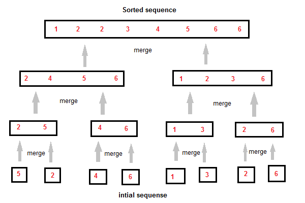

Merge Sort follows the rule of Divide and Conquer. But it doesn't divides the list into two halves. In merge sort the unsorted list is divided into N sublists, each having one element, because a list of one element is considered sorted. Then, it repeatedly merge these sublists, to produce new sorted sublists, and at lasts one sorted list is produced.
Merge Sort is quite fast, and has a time complexity of O(n log n). It is also a stable sort, which means the "equal" elements are ordered in the same order in the sorted list.

Like we can see in the above example, merge sort first breaks the unsorted list into sorted sublists, and then keep merging these sublists, to finlly get the complete sorted list.
/* a[] is the array, p is starting index, that is 0,
and r is the last index of array. */
Lets take a[5] = {32, 45, 67, 2, 7} as the array to be sorted.
void mergesort(int a[], int p, int r)
{
int q;
if(p < r)
{
q = floor( (p+r) / 2);
mergesort(a, p, q);
mergesort(a, q+1, r);
merge(a, p, q, r);
}
}
void merge(int a[], int p, int q, int r)
{
int b[5]; //same size of a[]
int i, j, k;
k = 0;
i = p;
j = q+1;
while(i <= q && j <= r)
{
if(a[i] < a[j])
{
b[k++] = a[i++]; // same as b[k]=a[i]; k++; i++;
}
else
{
b[k++] = a[j++];
}
}
while(i <= q)
{
b[k++] = a[i++];
}
while(j <= r)
{
b[k++] = a[j++];
}
for(i=r; i >= p; i--)
{
a[i] = b[--k]; // copying back the sorted list to a[]
}
}
Worst Case Time Complexity : O(n log n) Best Case Time Complexity : O(n log n) Average Time Complexity : O(n log n) Space Complexity : O(n)